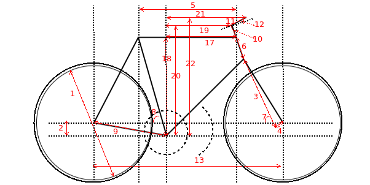

Toggle help
The calculated reach and stack values are only approximate values. The bike manufacturer should be contacted, if exact values are needed.
Geometry
Wheel size(1)
Tire size(1.5)
BB drop(2)
Fork length(3)
Fork offset(4)
Top tube length(5)
Head tube length(6)
Head tube angle(7)
Seat tube angle(8)
Chainstay length(9)
Spacers height(10)
Stem length(11)
Stem angle(12)
Toe length(20)
Crank length(20.1)
Wheelbase(13)
Front Center(13.1)
Rear Center(13.1)
Toe Overlap(14)
Ground Trail(15)
Mechanical Trail(16)
Reach(frame)(17)
Stack(frame)(18)
Reach(spacers)(19)
Stack(spacers)(20)
Reach(stem)(21)
Stack(stem)(22)
Graphics color
Add